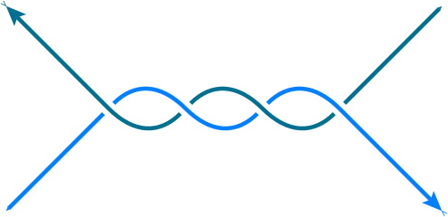

pyfeyn2 
2.3.4
FeynML:
FeynML
Gallery:
Gallery
Renderers:
Renderers
Interfaces:
Interfaces
Modules:
pyfeyn2
feynml
feynml.connector
feynml.feynmandiagram
feynml.feynml
feynml.head
feynml.id
feynml.interface
feynml.labeled
feynml.leg
feynml.line
feynml.link
feynml.link.Link
feynml.meta
feynml.momentum
feynml.particles
feynml.pdgid
feynml.point
feynml.propagator
feynml.shape
feynml.sheet
feynml.sourcing
feynml.styled
feynml.targeting
feynml.type
feynml.util
feynml.vertex
feynml.xml
Versions:
RTD
Stable
Dev
Links:
GitHub
pyfeyn2
feynml
feynml.link
View page source
feynml.link
Classes
Link
([rel, href])